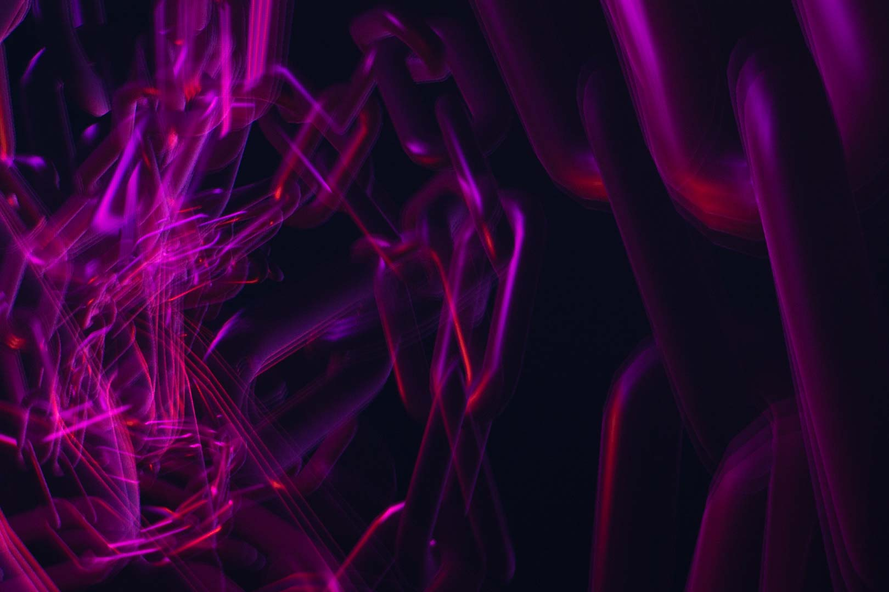
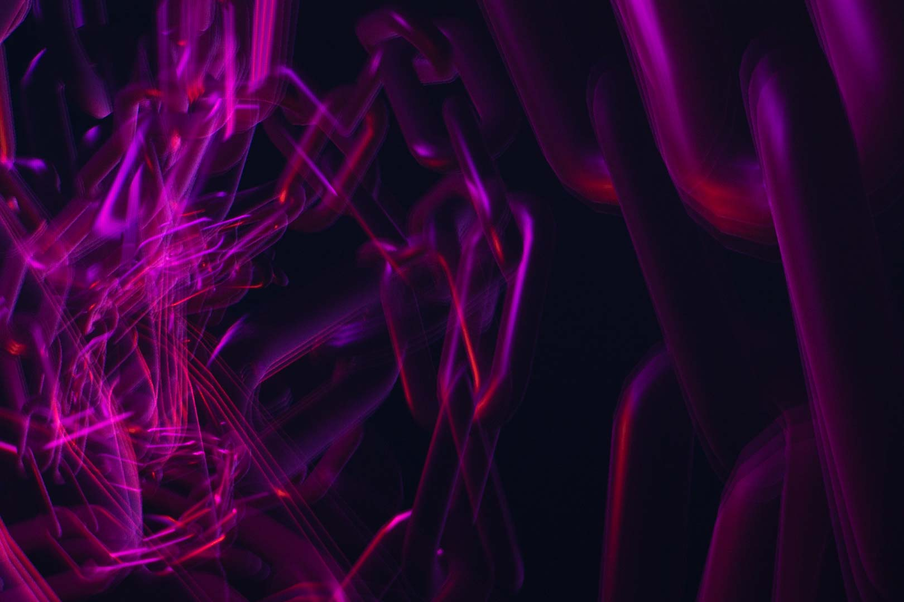
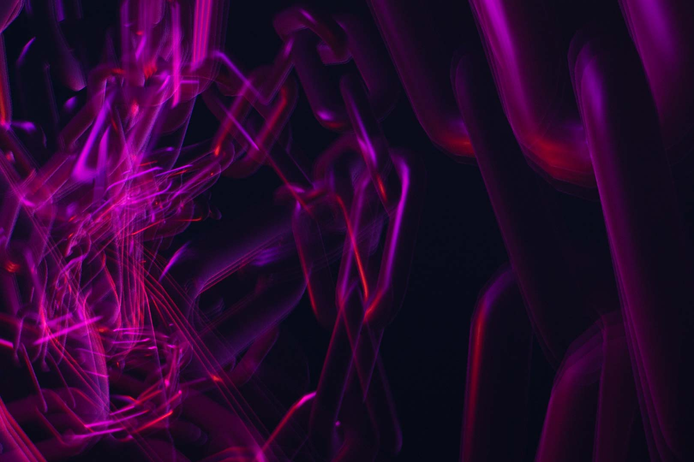

visuelle Gestaltung
Inspiriert von dem Motiv ‹Kreisscharen I› von Aron Warszawski, welche er 1972 digital erstellte, startete ich ein Schulprojekt der Audiovisualisierung. Die Umsetzung wurde in der Programmiersprache Javascript und ihrer Bibliothek p5.js geschrieben. Dabei entstand mein Wunsch, die Bewegung festzuhalten und zum statischen Bild zurück zu kehren. Mit der Digitalkamera Sony a6000 erstellte ich Langzeitaufnahmen meines Monitors. Ausgehend von diesem Experiment entwickelte ich weitere Bildwelten.
